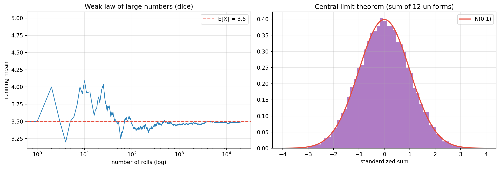
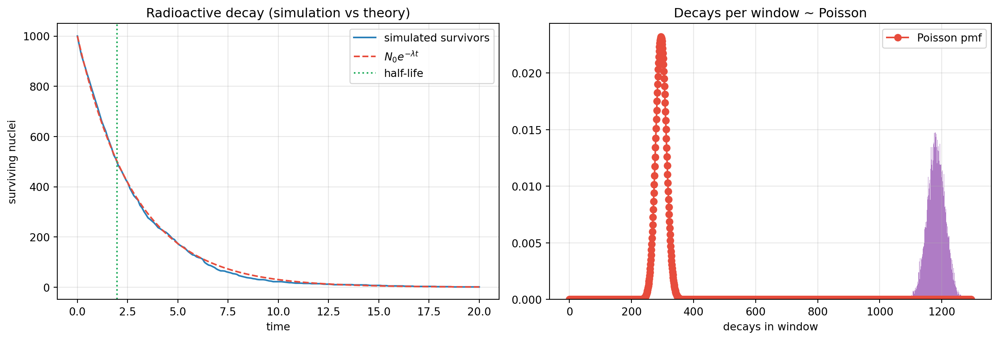

flowchart TD
A["Foundations<br/>sample space, σ-algebra, measure"] --> B["Random variables<br/>X : Ω → ℝ measurable"]
B --> C["Distributions<br/>pmf / pdf / cdf"]
B --> D["Expectation & moments<br/>E, Var, MGF"]
C --> E["Joint & conditional<br/>independence, Bayes"]
D --> F["Limit theorems<br/>LLN, CLT"]
E --> G["Stochastic processes<br/>Markov, Poisson, Brownian"]
F --> H["Statistics<br/>estimation, testing"]
G --> I["Applications<br/>physics, finance, ML, queues"]
H --> I
Probability Theory and Mathematical Probability
From Kolmogorov’s Axioms and Counting to Conditional Probability, Bayes, Random Variables, Distributions, Limit Theorems, Stochastic Processes, Estimation, and Applications from Radioactive Decay to Machine Learning
Mathematics
Probability
Statistics
Analysis
Machine Learning
Physics
A comprehensive first-principles course in mathematical probability: sample spaces, sigma-algebras, Kolmogorov’s axioms and their consequences, combinatorial probability, conditional probability and Bayes’ theorem, random variables and distributions (discrete, continuous, and the standard catalogue), expectation, variance, generating functions, joint distributions, independence, the law of large numbers and central limit theorem, Markov chains and Poisson/Brownian processes, point estimation, maximum likelihood, Bayesian inference, hypothesis testing, and applications including radioactive decay, queueing, finance, and machine learning, with an executable Python laboratory using NumPy, SciPy, and Matplotlib.
“Probability theory is nothing but common sense reduced to calculation.”
— Pierre-Simon Laplace
Probability began with gamblers and grew into the language of uncertainty. Kolmogorov’s 1933 axiomatization made it a branch of measure theory; the limit theorems made it the engine of statistics, physics, finance, and machine learning. This essay develops the theory from axioms to applications, with simulations throughout.
TipCompanion Treatises in this Series
1 1. Introduction: The Mathematics of Uncertainty
Probability assigns numbers in \([0,1]\) to events, obeying rules that make “chance” mathematically tractable. Three views coexist:
- Frequentist: probability is the limiting relative frequency in repeated trials.
- Bayesian: probability is a degree of belief, updated by evidence.
- Measure-theoretic: probability is a normalized measure on a \(\sigma\)-algebra.
Kolmogorov’s insight was that only the third is mathematically primitive; the first two are interpretations. We build the theory measure-first.
2 2. Foundations: Sample Spaces and Kolmogorov’s Axioms
Definition 1 (Definition 2.1 (Probability space)) A probability space is a triple \((\Omega, \mathcal{F}, \mathbb{P})\) where - \(\Omega\) is the sample space (set of outcomes); - \(\mathcal{F}\subseteq\mathcal{P}(\Omega)\) is a \(\sigma\)-algebra: \(\Omega\in\mathcal{F}\); closed under complements; closed under countable unions; - \(\mathbb{P}:\mathcal{F}\to[0,1]\) satisfies \[ \text{(K1) } \mathbb{P}(\Omega)=1,\qquad \text{(K2) } \mathbb{P}(A)\ge0,\qquad \text{(K3) } \text{for disjoint } A_1,A_2,\dots\in\mathcal{F},\quad \mathbb{P}\!\left(\bigcup_i A_i\right)=\sum_i\mathbb{P}(A_i). \] The triple is countably additive (K3 is the heart of it).
Consequences (all from the axioms):
| Property | Statement |
|---|---|
| Complement | \(\mathbb{P}(A^c)=1-\mathbb{P}(A)\) |
| Monotonicity | \(A\subseteq B \Rightarrow \mathbb{P}(A)\le\mathbb{P}(B)\) |
| Empty set | \(\mathbb{P}(\varnothing)=0\) |
| Finite additivity | disjoint \(A_i\): \(\mathbb{P}(\cup_{i=1}^n A_i)=\sum_i \mathbb{P}(A_i)\) |
| Inclusion–exclusion | \(\mathbb{P}(A\cup B)=\mathbb{P}(A)+\mathbb{P}(B)-\mathbb{P}(A\cap B)\) |
| Union bound (Boole) | \(\mathbb{P}(\cup_i A_i)\le\sum_i\mathbb{P}(A_i)\) |
| Continuity from below | \(A_n\uparrow A \Rightarrow \mathbb{P}(A_n)\to\mathbb{P}(A)\) |
| Bonferroni | \(\mathbb{P}(\cap_i A_i)\ge\sum_i\mathbb{P}(A_i)-(n-1)\) |
Why a \(\sigma\)-algebra? Not every subset of an uncountable \(\Omega\) can consistently be assigned a probability (non-measurable sets exist under the Axiom of Choice, via Vitali and Banach–Tarski). The \(\sigma\)-algebra restricts attention to measurable events.
3 3. Counting and Classical Probability
When \(\Omega\) is finite and all outcomes are equally likely, \[ \mathbb{P}(A)=\frac{|A|}{|\Omega|}. \]
Counting toolkit:
| Object | Count |
|---|---|
| permutations of \(n\) | \(n!\) |
| ordered \(k\)-selections, no repetition | \(n!/(n-k)!\) |
| combinations | \(\binom{n}{k}=\frac{n!}{k!(n-k)!}\) |
| multisets | \(\binom{n+k-1}{k}\) |
| functions \(A\to B\) | \(|B|^{|A|}\) |
| injections | falling factorial |
TipWorked Example 3.1: The Birthday Problem
With \(n\) people, the chance all birthdays differ is \(\prod_{k=0}^{n-1}(1-k/365)\). Setting this below \(1/2\) gives \(n\ge23\). With \(n=30\), \(\mathbb{P}(\text{match})\approx0.706\). The pairing count \(\binom{n}{2}\) grows quadratically, which is why intuition underestimates collisions.
4 4. Conditional Probability, Independence, and Bayes
Definition 2 (Definition 4.1 (Conditional probability)) For \(\mathbb{P}(B)>0\), \[ \mathbb{P}(A\mid B)=\frac{\mathbb{P}(A\cap B)}{\mathbb{P}(B)}. \] \(A\) and \(B\) are independent iff \(\mathbb{P}(A\cap B)=\mathbb{P}(A)\mathbb{P}(B)\), equivalently \(\mathbb{P}(A\mid B)=\mathbb{P}(A)\).
Law of total probability. If \(\{B_i\}\) partitions \(\Omega\), then \[ \mathbb{P}(A)=\sum_i \mathbb{P}(A\mid B_i)\,\mathbb{P}(B_i). \]
Theorem 1 (Theorem 4.1 (Bayes’ theorem)) \[ \mathbb{P}(B_i\mid A)=\frac{\mathbb{P}(A\mid B_i)\,\mathbb{P}(B_i)}{\sum_j \mathbb{P}(A\mid B_j)\,\mathbb{P}(B_j)}. \] Posterior \(\propto\) likelihood \(\times\) prior.
WarningThe base-rate fallacy
A test with \(99\%\) sensitivity and \(95\%\) specificity applied to a disease with \(1\%\) prevalence gives \[ \mathbb{P}(\text{disease}\mid +)=\frac{0.99\cdot0.01}{0.99\cdot0.01+0.05\cdot0.99}\approx 0.167. \] Despite a “99% accurate” test, the posterior is only \(\approx17\%\): with a rare prior, most positives are false. (Simulated in Section 11.)
5 5. Random Variables and Distributions
Definition 3 (Definition 5.1 (Random variable)) A random variable is a measurable function \(X:\Omega\to\mathbb{R}\). Its cumulative distribution function is \[ F_X(x)=\mathbb{P}(X\le x), \] non-decreasing, right-continuous, with limits \(0\) and \(1\). If \(X\) is discrete, \(F\) is a step function with probability mass function \(p_X(k)=\mathbb{P}(X=k)\). If \(X\) is continuous, \(F(x)=\int_{-\infty}^{x} f_X(t)\,dt\) for a probability density \(f_X\ge0\).
5.1 5.1 Expectation, Variance, Moments
\[ \mathbb{E}[X]=\sum_k k\,p_X(k)\ \ \text{or}\ \ \int_{\mathbb{R}} x\,f_X(x)\,dx,\qquad \operatorname{Var}(X)=\mathbb{E}[X^2]-\mathbb{E}[X]^2. \]
Law of the unconscious statistician (LOTUS): \[ \mathbb{E}[g(X)]=\int g(x)\,f_X(x)\,dx. \]
Moment generating function \(M_X(t)=\mathbb{E}[e^{tX}]\) (when finite near \(0\)); probability generating function \(G_X(z)=\mathbb{E}[z^X]\) for nonnegative integer \(X\); characteristic function \(\varphi_X(t)=\mathbb{E}[e^{itX}]\) (always defined).
Useful identities: \(\operatorname{Var}(aX+b)=a^2\operatorname{Var}(X)\); \(\mathbb{E}[X+Y]=\mathbb{E}[X]+\mathbb{E}[Y]\) (always); \(\operatorname{Var}(X+Y)=\operatorname{Var}(X)+\operatorname{Var}(Y)+2\operatorname{Cov}(X,Y)\).
5.2 5.2 The Standard Distributions
| Distribution | Parameters | Mean | Variance | Typical use |
|---|---|---|---|---|
| Bernoulli | \(p\) | \(p\) | \(p(1-p)\) | single yes/no |
| Binomial | \(n,p\) | \(np\) | \(np(1-p)\) | number of successes |
| Poisson | \(\lambda\) | \(\lambda\) | \(\lambda\) | rare events, counts |
| Geometric | \(p\) | \(1/p\) | \((1-p)/p^2\) | trials to first success |
| Negative Binomial | \(r,p\) | \(r/p\) | \(r(1-p)/p^2\) | trials to \(r\) successes |
| Hypergeometric | \(N,K,n\) | \(nK/N\) | \(\frac{nK(N-K)(N-n)}{N^2(N-1)}\) | sampling without replacement |
| Uniform \([a,b]\) | \(a,b\) | \((a+b)/2\) | \((b-a)^2/12\) | no information |
| Exponential | \(\lambda\) | \(1/\lambda\) | \(1/\lambda^2\) | waiting times, decay |
| Gamma | \(\alpha,\beta\) | \(\alpha/\beta\) | \(\alpha/\beta^2\) | sums of exponentials |
| Beta | \(\alpha,\beta\) | \(\frac{\alpha}{\alpha+\beta}\) | \(\frac{\alpha\beta}{(\alpha+\beta)^2(\alpha+\beta+1)}\) | Bayesian priors for \(p\) |
| Normal | \(\mu,\sigma^2\) | \(\mu\) | \(\sigma^2\) | limit distributions |
| Chi-squared | \(k\) | \(k\) | \(2k\) | variance tests |
| Student \(t\) | \(\nu\) | \(0\) | \(\nu/(\nu-2)\) | small-sample inference |
| Log-normal | \(\mu,\sigma\) | \(e^{\mu+\sigma^2/2}\) | — | multiplicative growth |
| Weibull | \(k,\lambda\) | — | — | reliability, lifetimes |
| Cauchy | \(x_0,\gamma\) | undefined | undefined | heavy tails, counterexamples |
The Poisson distribution (limit of Binomial with \(np\to\lambda\)), the Exponential (memoryless waiting time), and the Normal (limit of sums) are the three workhorses.
6 6. Joint Distributions, Independence, and Conditioning
For a random vector \((X,Y)\): joint CDF \(F(x,y)=\mathbb{P}(X\le x, Y\le y)\); joint density \(f(x,y)\); marginals by summation/integration. Independence iff \(f(x,y)=f_X(x)f_Y(y)\).
\[ \operatorname{Cov}(X,Y)=\mathbb{E}[(X-\mu_X)(Y-\mu_Y)],\qquad \rho=\frac{\operatorname{Cov}(X,Y)}{\sigma_X\sigma_Y}\in[-1,1]. \] Independent \(\Rightarrow\) uncorrelated; the converse fails (e.g. \(X\) uniform on \([-1,1]\), \(Y=X^2\)).
Conditional expectation \(\mathbb{E}[X\mid Y]\) is a random variable (a function of \(Y\)); the tower property is \(\mathbb{E}[\mathbb{E}[X\mid Y]]=\mathbb{E}[X]\). Conditional expectation is the \(L^2\)-optimal predictor of \(X\) from \(Y\).
Key tools: Markov’s and Chebyshev’s inequalities; Borel–Cantelli lemmas; the zero–one laws (Kolmogorov, Hewitt–Savage).
7 7. Limit Theorems
Theorem 2 (Theorem 7.1 (Law of Large Numbers)) Let \(X_1,X_2,\dots\) be i.i.d. with \(\mu=\mathbb{E}[X_1]\) finite and sample mean \(\bar X_n=\frac1n\sum_{i=1}^n X_i\). - Weak LLN: \(\bar X_n \xrightarrow{P} \mu\) (convergence in probability). - Strong LLN: \(\bar X_n \xrightarrow{\text{a.s.}} \mu\) (almost sure convergence).
LLN justifies the frequentist interpretation: averages stabilize at expectations.
Theorem 3 (Theorem 7.2 (Central Limit Theorem)) If \(X_i\) are i.i.d. with mean \(\mu\) and finite variance \(\sigma^2>0\), then \[ \frac{\bar X_n-\mu}{\sigma/\sqrt n}\ \xrightarrow{d}\ \mathcal{N}(0,1), \] i.e. \(\sqrt n(\bar X_n-\mu)/\sigma\) converges in distribution to the standard normal. The Berry–Esseen theorem bounds the error by \(C\rho/(\sigma^3\sqrt n)\), with \(\rho=\mathbb{E}|X-\mu|^3\).
The CLT explains the ubiquity of the normal distribution and the \(\sqrt n\) rate of statistical estimation. Its failure (infinite variance) produces stable laws and heavy tails (Cauchy, Lévy).
8 8. Stochastic Processes
| Process | Definition | Key facts |
|---|---|---|
| Markov chain | state \(X_n\), \(P(X_{n+1}\mid X_n,\dots)=P(X_{n+1}\mid X_n)\) | stationary distribution \(\pi P=\pi\); ergodic theorem |
| Poisson process | counts \(N(t)\) with independent stationary increments, rate \(\lambda\) | \(N(t)\sim\mathrm{Poisson}(\lambda t)\); interarrival times \(\sim\mathrm{Exp}(\lambda)\) |
| Brownian motion | continuous paths, independent Gaussian increments | nowhere differentiable; Markov + martingale |
| Martingale | \(\mathbb{E}[M_{n+1}\mid \mathcal{F}_n]=M_n\) | optional stopping; convergence theorems |
| Branching process | offspring distribution; \(Z_{n+1}=\sum_{i=1}^{Z_n}\xi_i\) | extinction probability is the least fixed point of the PGF |
Markov chains model queues, Markov chain Monte Carlo (MCMC), PageRank, and language models; Poisson processes model radioactive decay, photon arrivals, and queueing; Brownian motion is the continuous limit of random walks and the basis of stochastic calculus.
9 9. Statistical Inference
- Point estimation: sample mean/variance; method of moments; maximum likelihood \(\hat\theta=\arg\max_\theta \prod_i f(x_i;\theta)\); properties: unbiasedness, consistency, efficiency (Cramér–Rao bound).
- Bayesian inference: prior \(\pi(\theta)\), posterior \(\pi(\theta\mid x)\propto f(x\mid\theta)\pi(\theta)\); conjugate families (Beta–Binomial, Gamma–Poisson, Normal–Normal); credible intervals.
- Confidence intervals and hypothesis testing: \(p\)-values, Neyman–Pearson lemma, power, type I/II errors.
- Monte Carlo: the LLN justifies estimation by sampling; variance reduction (importance sampling, antithetic variates); MCMC for intractable posteriors.
10 10. Applications
| Domain | Model | Quantity |
|---|---|---|
| Radioactive decay | each nucleus decays independently, rate \(\lambda\) | \(N(t)\sim\mathrm{Binomial}(N_0,e^{-\lambda t})\); Poisson counts |
| Reliability | component lifetime \(\sim\mathrm{Exp}\)/\(,\)Weibull | survival \(S(t)=e^{-\lambda t}\) |
| Queueing | M/M/1 Markov chain | utilization \(\rho=\lambda/\mu\); waiting times |
| Finance | geometric Brownian motion | Black–Scholes option price |
| Machine learning | probabilistic models, Bayes | posterior predictive distributions |
| Physics | statistical mechanics | Boltzmann distribution, partition function |
| Information theory | entropy \(H=-\sum p_i\log p_i\) | channel capacity |
| Genetics | Mendelian inheritance | genotype probabilities |
Radioactive decay in detail. A single unstable nucleus decays in a time interval \(dt\) with probability \(\lambda\,dt\), independent of its past (memorylessness). The waiting time is \(\mathrm{Exp}(\lambda)\): \[ \mathbb{P}(T>t)=e^{-\lambda t},\qquad \mathbb{E}[T]=1/\lambda,\qquad t_{1/2}=\frac{\ln 2}{\lambda}. \] Starting from \(N_0\) independent nuclei, the surviving count is \[ N(t)\sim\mathrm{Binomial}\!\left(N_0,\ e^{-\lambda t}\right),\qquad \mathbb{E}[N(t)]=N_0e^{-\lambda t}. \] Radioactive decay chains (e.g. \(A\to B\to C\)) obey the Bateman equations \(\dot N_B=\lambda_A N_A-\lambda_B N_B\), a coupled linear system solved by sums of exponentials — a direct link to the sequences and series article.
11 11. Computational Laboratory
The lab simulates the law of large numbers, the central limit theorem, radioactive decay, Bayes’ rule, a Markov chain, and Monte Carlo estimation.
Code
import numpy as np
import matplotlib.pyplot as plt
rng = np.random.default_rng(12345)
fig, axes = plt.subplots(1, 2, figsize=(13, 4.5))
# Weak LLN: dice rolls
rolls = rng.integers(1, 7, size=20000)
running = np.cumsum(rolls) / np.arange(1, len(rolls) + 1)
axes[0].plot(running, color='#2980b9', lw=1.2)
axes[0].axhline(3.5, color='#e74c3c', ls='--', label='E[X] = 3.5')
axes[0].set_xscale('log')
axes[0].set_title("Weak law of large numbers (dice)")
axes[0].set_xlabel("number of rolls (log)"); axes[0].set_ylabel("running mean")
axes[0].legend(); axes[0].grid(alpha=0.3)
# CLT: sum of uniforms
n, trials = 12, 20000
sums = rng.uniform(0, 1, size=(trials, n)).sum(axis=1)
z = (sums - n/2) / np.sqrt(n/12)
axes[1].hist(z, bins=60, density=True, color='#8e44ad', alpha=0.7)
xs = np.linspace(-4, 4, 200)
axes[1].plot(xs, np.exp(-xs**2/2)/np.sqrt(2*np.pi), color='#e74c3c', lw=2, label='N(0,1)')
axes[1].set_title("Central limit theorem (sum of 12 uniforms)")
axes[1].set_xlabel("standardized sum"); axes[1].legend(); axes[1].grid(alpha=0.3)
plt.tight_layout(); plt.show()
Code
import numpy as np
import matplotlib.pyplot as plt
rng = np.random.default_rng(7)
N0, lam, tmax = 1000, 0.35, 20
times = np.linspace(0, tmax, 200)
# Simulate waiting times Exp(lambda); count survivors at each time
waits = rng.exponential(1/lam, size=N0)
surv = np.array([(waits > t).sum() for t in times])
fig, axes = plt.subplots(1, 2, figsize=(13, 4.5))
axes[0].plot(times, surv, color='#2980b9', lw=1.5, label='simulated survivors')
axes[0].plot(times, N0*np.exp(-lam*times), color='#e74c3c', ls='--', label=r'$N_0 e^{-\lambda t}$')
axes[0].axvline(np.log(2)/lam, color='#27ae60', ls=':', label='half-life')
axes[0].set_title("Radioactive decay (simulation vs theory)")
axes[0].set_xlabel("time"); axes[0].set_ylabel("surviving nuclei")
axes[0].legend(); axes[0].grid(alpha=0.3)
# Poisson counts in windows
window = 1.0
counts = []
for _ in range(20000):
w = rng.exponential(1/lam, size=4000)
counts.append((w < window).sum())
counts = np.array(counts)
axes[1].hist(counts, bins=range(0, counts.max()+2), density=True, color='#8e44ad', alpha=0.7)
ks = np.arange(0, counts.max()+1)
from math import lgamma, exp, log
mu = N0*(1-np.exp(-lam*window))
pois = np.exp(-mu + ks*np.log(mu) - np.array([lgamma(k+1) for k in ks]))
axes[1].plot(ks, pois, 'o-', color='#e74c3c', label='Poisson pmf')
axes[1].set_title("Decays per window ~ Poisson")
axes[1].set_xlabel("decays in window"); axes[1].legend(); axes[1].grid(alpha=0.3)
plt.tight_layout(); plt.show()
Code
import numpy as np
from scipy import stats
rng = np.random.default_rng(2024)
print("=== 1. LAW OF LARGE NUMBERS ===")
for n in [100, 1000, 10000, 100000, 1000000]:
m = rng.integers(1, 7, size=n).mean()
print(f" n={n:>7}: sample mean = {m:.5f} (E[X]=3.5)")
print("\n=== 2. CENTRAL LIMIT THEOREM vs NORMAL ===")
from math import sqrt, erf
sums = rng.uniform(0, 1, size=(50000, 12)).sum(axis=1)
z = (sums - 6) / sqrt(1)
print(f" mean(z) = {z.mean():.4f} (0), std(z) = {z.std():.4f} (1)")
p = np.mean((z > -1) & (z < 1))
print(f" P(-1<Z<1) simulated = {p:.4f}, normal = {(erf(1/sqrt(2))):.4f}")
print("\n=== 3. RADIOACTIVE DECAY: EXPONENTIAL & POISSON ===")
lam = 0.35
print(f" mean lifetime 1/lambda = {1/lam:.4f}, half-life = {np.log(2)/lam:.4f}")
waits = rng.exponential(1/lam, size=200000)
print(f" simulated mean lifetime = {waits.mean():.4f}")
print(f" P(T > half-life) sim = {np.mean(waits > np.log(2)/lam):.4f} (theory 0.5)")
print("\n=== 4. BAYES: MEDICAL TEST BASE-RATE FALLACY ===")
prev, sens, spec = 0.01, 0.99, 0.95
post = sens*prev / (sens*prev + (1-spec)*(1-prev))
print(f" prevalence={prev}, sensitivity={sens}, specificity={spec}")
print(f" P(disease | positive) = {post:.4f} (only ~17%!)")
# Simulate to confirm
N = 2_000_000
disease = rng.random(N) < prev
positive = np.where(disease, rng.random(N) < sens, rng.random(N) >= spec)
print(f" simulation: P(disease | +) = {disease[positive].mean():.4f}")
print("\n=== 5. MARKOV CHAIN STATIONARY DISTRIBUTION ===")
P = np.array([[0.9, 0.1], [0.5, 0.5]]) # weather: 0=sun, 1=rain
pi = np.array([0.2, 0.8])
for _ in range(200):
pi = pi @ P
print(f" stationary distribution pi = {pi.round(6)} (check pi P = pi: {np.allclose(pi @ P, pi)})")
print("\n=== 6. MONTE CARLO ESTIMATION OF PI AND E ===")
n = 2_000_000
x, y = rng.random(n), rng.random(n)
print(f" pi ~ 4 * P(inside unit circle) = {4*np.mean(x*x + y*y < 1):.5f} (true {np.pi:.5f})")
print(f" E[1/U] over U~Uniform(0,1) = {np.mean(1/rng.uniform(1e-9,1,n)):.5f} (diverges; heavy tail)")
print("\n=== 7. STANDARD DISTRIBUTION SANITY CHECKS ===")
for name, rv in [("Normal(0,1)", stats.norm()), ("Exponential(1)", stats.expon()),
("Poisson(3)", stats.poisson(3)), ("Beta(2,5)", stats.beta(2,5))]:
s = rv.rvs(size=500000, random_state=1)
print(f" {name:16s}: sample mean={s.mean():.4f}, var={s.var():.4f}, theory mean={rv.mean():.4f}, var={rv.var():.4f}")=== 1. LAW OF LARGE NUMBERS ===
n= 100: sample mean = 3.24000 (E[X]=3.5)
n= 1000: sample mean = 3.44700 (E[X]=3.5)
n= 10000: sample mean = 3.50970 (E[X]=3.5)
n= 100000: sample mean = 3.49811 (E[X]=3.5)
n=1000000: sample mean = 3.49998 (E[X]=3.5)
=== 2. CENTRAL LIMIT THEOREM vs NORMAL ===
mean(z) = -0.0014 (0), std(z) = 0.9946 (1)
P(-1<Z<1) simulated = 0.6819, normal = 0.6827
=== 3. RADIOACTIVE DECAY: EXPONENTIAL & POISSON ===
mean lifetime 1/lambda = 2.8571, half-life = 1.9804
simulated mean lifetime = 2.8488
P(T > half-life) sim = 0.4988 (theory 0.5)
=== 4. BAYES: MEDICAL TEST BASE-RATE FALLACY ===
prevalence=0.01, sensitivity=0.99, specificity=0.95
P(disease | positive) = 0.1667 (only ~17%!)
simulation: P(disease | +) = 0.1658
=== 5. MARKOV CHAIN STATIONARY DISTRIBUTION ===
stationary distribution pi = [0.833333 0.166667] (check pi P = pi: True)
=== 6. MONTE CARLO ESTIMATION OF PI AND E ===
pi ~ 4 * P(inside unit circle) = 3.14274 (true 3.14159)
E[1/U] over U~Uniform(0,1) = 29.99446 (diverges; heavy tail)
=== 7. STANDARD DISTRIBUTION SANITY CHECKS ===
Normal(0,1) : sample mean=0.0011, var=0.9989, theory mean=0.0000, var=1.0000
Exponential(1) : sample mean=0.9987, var=0.9946, theory mean=1.0000, var=1.0000
Poisson(3) : sample mean=2.9988, var=3.0057, theory mean=3.0000, var=3.0000
Beta(2,5) : sample mean=0.2856, var=0.0255, theory mean=0.2857, var=0.025512 12. Summary
\[ \begin{aligned} &\textbf{Axioms: } && \mathbb{P}(\Omega)=1,\ \mathbb{P}(A)\ge0,\ \text{countable additivity.}\\[3pt] &\textbf{Conditioning: } && \mathbb{P}(A\mid B)=\mathbb{P}(A\cap B)/\mathbb{P}(B);\quad \text{Bayes}= \text{posterior}\propto\text{likelihood}\times\text{prior}.\\[3pt] &\textbf{Random variables: } && F_X(x)=\mathbb{P}(X\le x);\quad \mathbb{E},\ \operatorname{Var},\ \text{MGF}.\\[3pt] &\textbf{Limits: } && \bar X_n\to\mu\ (\text{LLN});\quad \sqrt n(\bar X_n-\mu)\xrightarrow{d}\mathcal{N}(0,\sigma^2)\ (\text{CLT}).\\[3pt] &\textbf{Processes: } && \text{Markov chains, Poisson, Brownian, martingales.} \end{aligned} \]
13 13. Curated References and Primary Sources
- Kolmogorov, A. N. (1933). Grundbegriffe der Wahrscheinlichkeitsrechnung. Springer. (Foundations.)
- Feller, William (1968/1971). An Introduction to Probability Theory and Its Applications, Vols. 1–2, 3rd/2nd ed. Wiley.
- Billingsley, Patrick (1995). Probability and Measure, 3rd ed. Wiley.
- Durrett, Rick (2019). Probability: Theory and Examples, 5th ed. Cambridge University Press.
- Ross, Sheldon (2019). Introduction to Probability Models, 12th ed. Academic Press.
- Williams, David (1991). Probability with Martingales. Cambridge University Press.
- Chung, K. L. (2001). A Course in Probability Theory, 3rd ed. Academic Press.
- Grimmett, G. & Stirzaker, D. (2020). Probability and Random Processes, 4th ed. Oxford.
- Casella, G. & Berger, R. (2001). Statistical Inference, 2nd ed. Duxbury.
- Cover, T. & Thomas, J. (2006). Elements of Information Theory, 2nd ed. Wiley.